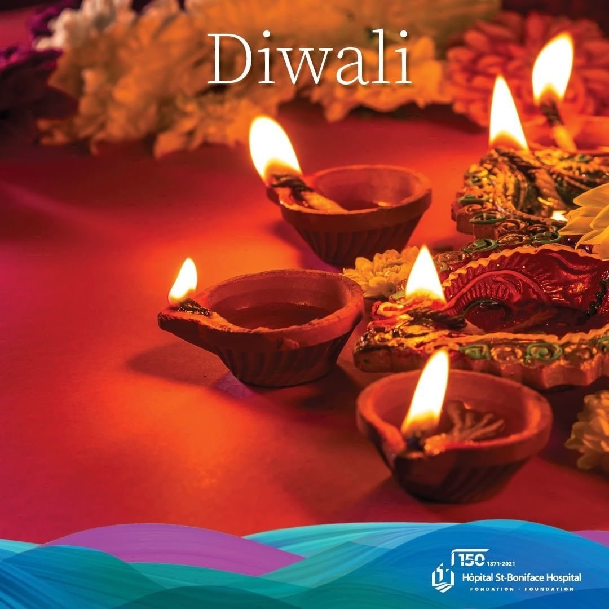
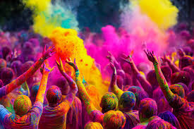
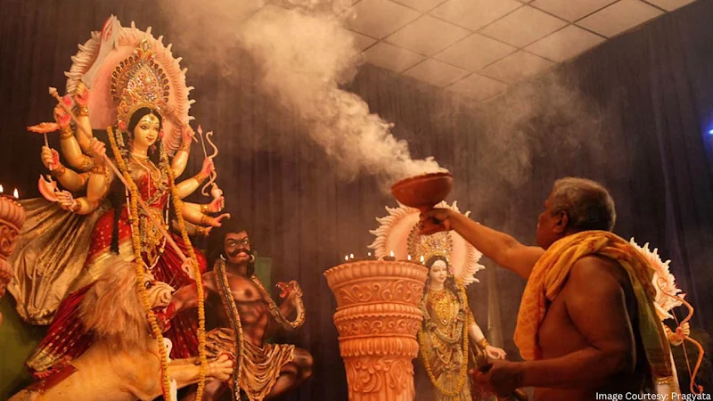
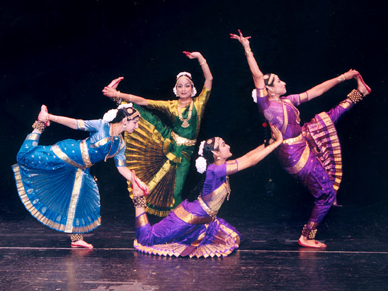
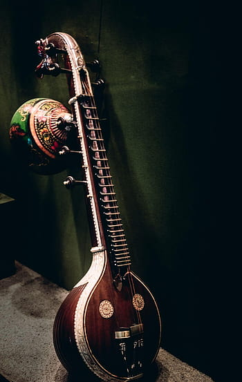
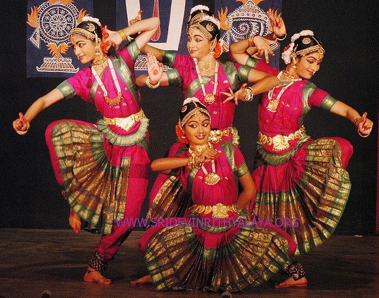
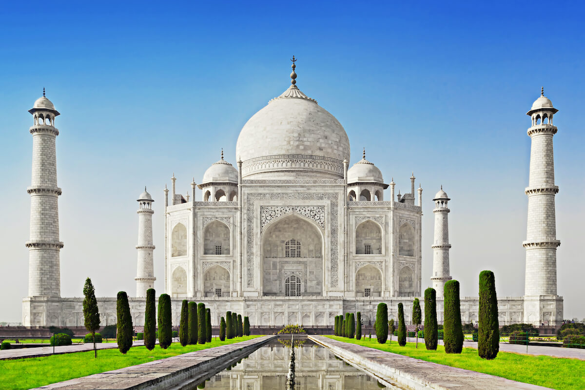
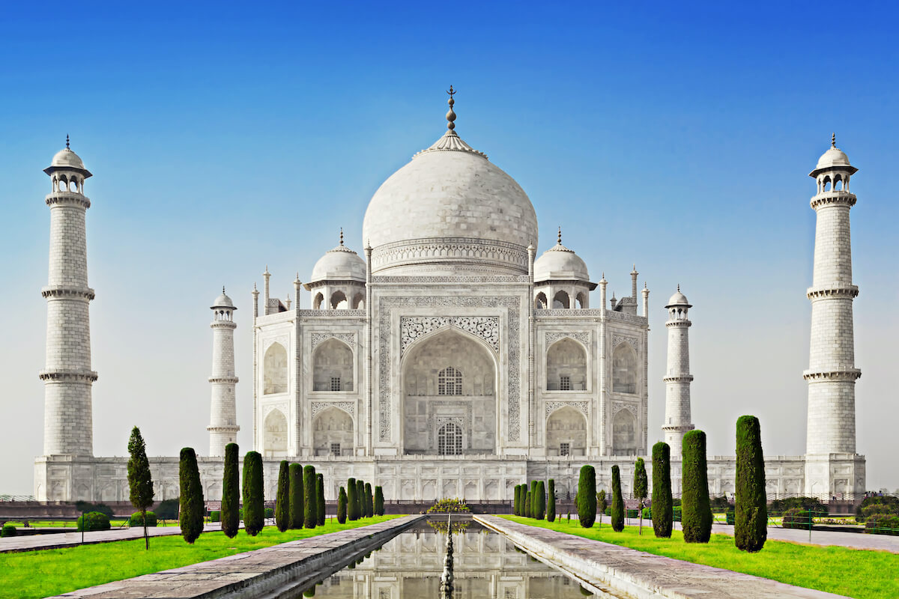

Festivals
  India is renowned for its vibrant festivals, such as Diwali, Holi, and Durga Puja. These festivals are celebrated with great enthusiasm, showcasing traditional rituals, colorful decorations, and sumptuous feasts. The religious festivals are one of the most famous festivals not only throughout India but over the world. Some of the most prominent religious festivals are Diwali, Eid-Ul-Fitr, Christmas, Guru Nanak Jayanti, Holi and many more. Diwali and Holi are the most prominent festivals of the Hindu religion. They are very colorful and full of lights. Next up, Eid-Ul-Fitr is an Islamic festival which celebrates the end of Ramadan. It is about delectable dishes and family gatherings. Christmas celebrates the birthday of Jesus Christ. Furthermore, it is about Christmas trees and Santa Claus. Guru Nanak Jayanti celebrates the birthday of Guru Nanak Dev.
Traditional Music and Dance
  India's traditional music and dance forms are as diverse as its culture. Classical dance forms like Bharatnatyam, Kathak, and Odissi, as well as folk dances, play a significant role in cultural expressions and celebrations. Dance and music act as custodians of our rich cultural heritage, with stories, customs and rituals passed down from generation to generation. Through classical dances like Bharatnatyam and Kathak, we are transported to ancient times, where mythological stories come alive with beautiful movements and intricate footwork. Similarly, folk dances like Garba and Bhangra celebrate the diversity of our land, reflecting the joys and struggles of daily life in different regions. Furthermore, these art forms are not just for entertainment; They are the living embodiment of our history and identity. Be it the rhythmic beats of the dhol or the melodious beats of the sitar, they carry with us the echoes of the past, connecting us to our ancestors and our cultural roots. The classical music of India can be categorised into broad traditions which are North Indian and South Indian. Both the traditions are called with different names. The North Indian tradition is called as Hindustani Sangeet and is comprised of various kinds such as Dhrupad, Dhamar, Khayal, Tappa and Thumri. While the South Indian tradition of music is known as Carnatic Sangeet. The music mainly depends on two crucial aspects-‘raag’ symbolising the melodic form and the ‘taal’ representing the rhythmic form. For Indian classical music different kinds of instruments are used in their unique ways. Some of these are Tantru (stringed), Susir (wind), Avanada (percussion) and Ghana (gongs, bells and cymbals).
Cuisine


Indian cuisine is famous for its rich flavors and variety. Each region has its own specialty, from the spicy curries of the South to the sweet dishes of the North. Indian food is a reflection of the country’s diverse cultures and traditions. Indian cuisine consists of a variety of regional and traditional cuisines native to the Indian subcontinent. Given the diversity in soil, climate, culture, ethnic groups, and occupations, these cuisines vary substantially and use locally available spices, herbs, vegetables, and fruits. Indian food is also heavily influenced by religion, in particular Hinduism and Islam, cultural choices and traditions.[1][2] Historical events such as invasions, trade relations, and colonialism have played a role in introducing certain foods to this country. The Columbian discovery of the New World brought a number of new vegetables and fruits to India. A number of these such as potatoes, tomatoes, chillies, peanuts, and guava have become staples in many regions of India.[3] Indian cuisine has shaped the history of international relations; Indian cuisine has influenced other cuisines across the world, especially those from Europe (Britain in particular), the Middle East, Southern African, East Africa, Southeast Asia, North America, Mauritius, Fiji, Oceania, and the Caribbean.
Historical Monuments

 

India boasts some of the world's most iconic historical monuments, including the Taj Mahal, Qutub Minar, and Red Fort. These architectural marvels not only reflect India's historical richness but also its artistic and cultural heritage. Indian monuments are among the most notable examples of the rich and varied Indian civilization because of their complex superfluities and beautiful architecture. Each Indian monument, which is a work of architecture in and of itself, is a strikingly spectacular example of incredible artistry, covering a sense of mystery, deception, and romance. The art of master craftsmanship and elegance highlights the beauty of the ancient past, whether it is the marvel in white marble, the Taj Mahal, or the splendor in red stone, the beautiful Red Fort. Monuments serve as witnesses to India’s history and as the protector pillars of its cultural legacy. Future generations are being inspired by India’s monuments.